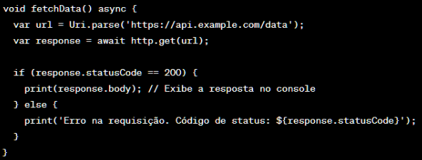
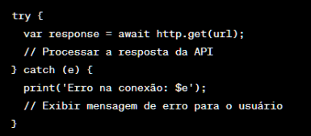
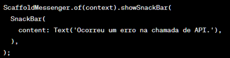
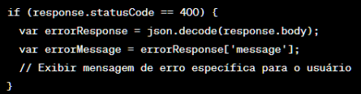

Introdução ao armazenamento de dados em Flutter
O armazenamento de dados é uma parte essencial no desenvolvimento de aplicativos Flutter. Existem várias opções disponíveis para armazenar dados em um aplicativo, dependendo das necessidades específicas. VIntroduziremos algumas das principais opções de armazenamento de dados a seguir:
- ● Shared Preferences: O Shared Preferences é uma forma simples e leve de armazenar dados chave-valor. É ideal para armazenar pequenas quantidades de dados, como configurações de usuário, preferências ou informações de autenticação. Os dados são persistidos localmente e podem ser acessados rapidamente. No entanto, não é adequado para armazenar grandes volumes de dados estruturados.
-
● Arquivos Locais (File System): O Flutter oferece suporte ao acesso ao sistema de arquivos do dispositivo, permitindo que você armazene e recupere arquivos no armazenamento local. Isso é útil para armazenar dados estruturados, como arquivos de banco de dados SQLite, arquivos JSON ou qualquer outro tipo de arquivo. Você pode usar a biblioteca path_provider para obter o caminho adequado para armazenamento local em diferentes plataformas -
● Banco de Dados SQLite: O SQLite é um banco de dados relacional leve e embutido que pode ser usado para armazenar dados estruturados em um aplicativo Flutter. Ele oferece recursos avançados, como consultas SQL e indexação de dados, tornando-o adequado para aplicativos que exigem operações de banco de dados mais complexas. A biblioteca sqflite é amplamente usada para interagir com o SQLite em Flutter.
● Armazenamento em Nuvem: Se você precisa armazenar dados em um local centralizado e acessível em vários dispositivos, pode considerar o armazenamento em nuvem. Existem várias opções disponíveis, como o Firebase Realtime Database, o Cloud Firestore ou serviços de armazenamento de objetos, como o Amazon S3 ou o Google Cloud Storage. Esses serviços oferecem recursos de sincronização em tempo real e escalabilidade para aplicativos Flutter.
Além dessas opções, também existem bibliotecas adicionais que fornecem soluções de gerenciamento de estado e persistência, como o Hive, que é um banco de dados de chave-valor rápido e fácil de usar, e o Moor, que é um gerador de código que facilita a comunicação com bancos de dados SQLite.
A escolha do método de armazenamento de dados depende das necessidades específicas do seu aplicativo, como o tamanho dos dados, a complexidade das operações de banco de dados e os requisitos de sincronização de dados. É importante considerar a segurança, o desempenho e a escalabilidade ao selecionar a opção de armazenamento mais adequada para o seu aplicativo Flutter.
Chamadas de API para obtenção de dados externos
Em Flutter, você pode realizar chamadas de API para obtenção de dados externos usando a biblioteca http.
Exemplificando:
-
1. Certifique-se de ter adicionado a dependência http no arquivo pubspec.yaml do seu projeto Flutter:
2. Importe a biblioteca http no arquivo Dart onde você deseja realizar as chamadas de API:

3. Use a função http.get() para fazer uma chamada GET para a URL da API desejada. Aqui está um exemplo básico que obtém dados de uma API e exibe a resposta no console:

4. Você pode chamar a função fetchData() quando necessário para obter os dados da API. Lembre-se de lidar adequadamente com os erros e exceções que possam ocorrer durante a chamada de API.
Este é apenas um exemplo básico de como realizar chamadas de API em Flutter usando a biblioteca http. É importante notar que existem outras bibliotecas e abordagens disponíveis para trabalhar com chamadas de API em Flutter, como o uso de pacotes como dio ou a criação de classes e modelos personalizados para facilitar a serialização e desserialização de dados. Recomenda-se consultar a documentação dessas bibliotecas e explorar exemplos mais avançados para obter mais informações.
Tratamento de erros e feedback ao usuário
No processo de chamadas de API em Flutter, é importante realizar o tratamento de erros e fornecer feedback adequado ao usuário para garantir uma experiência de uso melhor.
Segue práticas comuns para lidar com erros e fornecer feedback ao usuário:
-
Verificar o código de status da resposta
Ao receber a resposta da chamada de API, você pode verificar o código de status HTTP para determinar se a solicitação foi bem-sucedida ou se ocorreu algum erro.
Os códigos de status comuns são 2xx para sucesso, 4xx para erros do cliente e 5xx para erros do servidor.
-
Tratar erros de conexão
É importante lidar com erros de conexão, como falhas na rede ou problemas de conectividade. Você pode envolver a chamada de API em um bloco try-catch para capturar exceções e fornecer uma mensagem de erro adequada ao usuário.
Exemplo:

-
Exibir mensagens de erro ao usuário
Quando ocorrer um erro durante a chamada de API, você pode exibir uma mensagem de erro relevante para o usuário. Isso pode ser feito por meio de um diálogo, um snackbar, um Toast ou qualquer outro componente de interface do usuário adequado.
Exemplo:

-
Tratar erros específicos da API
Além dos erros de conexão, a API pode retornar erros específicos com informações úteis. Por exemplo, uma resposta com código de status 400 pode indicar que os dados da solicitação estão incorretos. Você pode analisar a resposta da API e tratar esses erros específicos de acordo.
Exemplo:

-
Fornecer feedback de carregamento
Durante a chamada de API, é comum exibir um indicador de carregamento para informar ao usuário que a solicitação está em andamento. Isso pode ser feito usando um CircularProgressIndicator ou outro componente visual adequado.
Essas são apenas algumas práticas básicas para lidar com erros e fornecer feedback ao usuário durante chamadas de API em Flutter. Você pode adaptar essas práticas de acordo com os requisitos do seu aplicativo e a lógica específica das chamadas de API que está implementando.